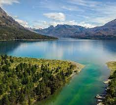
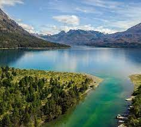

Pero conociendo estos peces, ¿cuales son las practicas de pesca mas utilizadas?
Fly Fishing
Tambien conocida como pesca con mosca, esta modalidad consta de utilizar una caña con mayor sensibilidad que otras, usando una "mosca" artificial, que tiene muy poco peso, haciendo que la practica sea escensial para esta pesca.
Spinning
el spinning es básicamente una modalidad de pesca que consiste en intentar engañar a los peces lanzando un señuelo artificial al agua y darle vida moviéndolo de tal forma que perezca un pez pequeño.